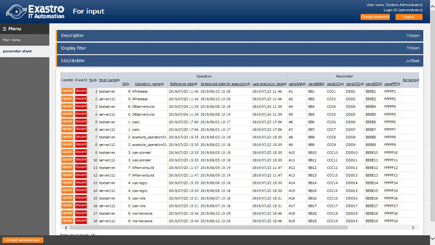
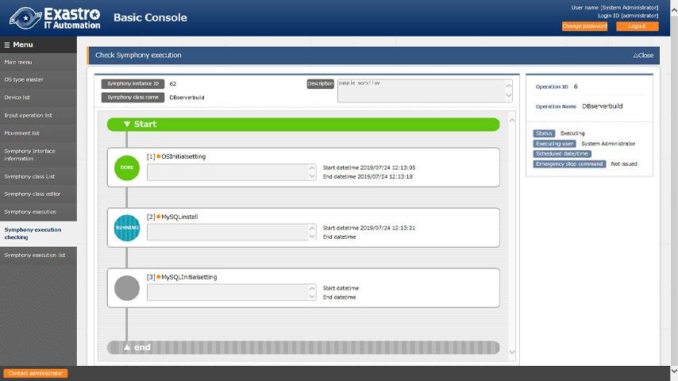
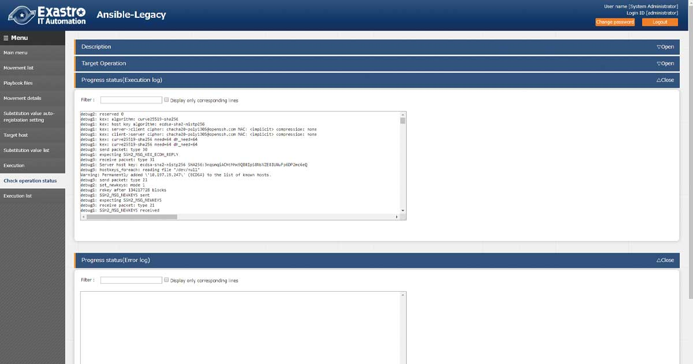

Three problems tend to occur during system construction.
-
- Data management
errors - Centralized management prevents confusion.
- 
- Data management
-
- Manual processing
mistakes - Automated tasks simplify operation.
- 
- Manual processing
-
- Delays in responding
to problems - Detailed records identify issues.
- 
- Delays in responding
Main features of Exastro IT Automation
-
- IT Automation provides multiple user interfaces.
- You can centrally manage IaCs and parameters from multiple user interfaces (Web, Excel, RestAPI).
-
- IT Automation helps to improve the reusability of the IaC.
- IT Automation helps to modularize your IaCs for reusability and uses them together during execution.
-
- IT Automation prevents typos, such as variable names.
- IT Automation automatically parses IaCs to find out the variable names. You can select and use variable names without typos.
-
- IT Automation manages the generation of system parameters.
- IT Automation manages the generation of system parameters to be set in variables. You can also search for system parameters designed in the past.
-
- IT Automation controls multiple northbound automation softwares.
- IT Automation controls multiple automation softwares such as ANSIBLE and automatically generates the input data required for them to operate.
-
- IT Automation helps you monitor the execution of automation software in real time
- IT Automation helps you monitor the execution status of IaCs in real time. It also collects execution logs and reports successful and failed executions.
Do you want to know more about Exastro IT Automation?

Various documents are available, click the button for more information.